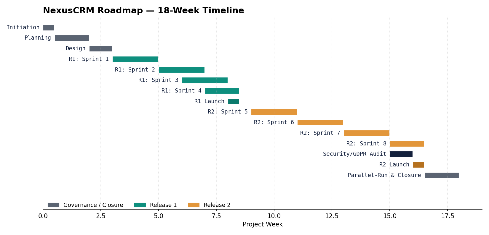

Roadmap
Hybrid: governance + Scrum

A full project-lifecycle case study — business case through go-live — for a B2B SaaS CRM built across two releases by a 9-person team, with real GDPR, dependency, and scope-trade-off decisions along the way.

Problem, options, cost-benefit, recommendation.
Scope, team, milestones, success criteria.
Register + power/interest grid.
Ownership across 18 deliverables.
18 functional + 12 non-functional.
8-phase breakdown, Week 0–18.
25 stories, story-pointed, release-mapped.
Two-release plan, sprint by sprint.
Scope, rollout, rollback per release.
All 8 sprints, 2 in full depth.
7 risks, 2 issues, tracked to closure.
4 internal + 4 external dependencies.
3 snapshots across the project.
Entry/exit criteria, 10 test scenarios.
Cutover + rollback plan.
What worked, what didn't, action items.
A shared platform component caused a real 2-day slip mid-sprint. Rather than let it run silently, the team reordered work in parallel, absorbed the delay in planned slack, and the Sponsor heard about it in the weekly report — not as a surprise at sprint review.
Read the full sprint plan →An unplanned legal licensing review threatened a Should-priority feature. The trade-off went to the Sponsor explicitly rather than being absorbed quietly — the lower-priority feature was deferred and shipped one sprint later with zero roadmap impact.
Read the full sprint plan →